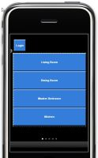

Hey guys, so I have managed to access web console page at http://myrpiaddr:8080/webconsole. I've added some new designs in the Online Designer and sync it using the controller. However, when i access the web console, it shows me an iPhone and black screens. Nothing else. Why is it so?

Designs of simple app
Black Screen
{kind=link}
{kind=link}
Edit:
I'm using Mozilla Firefox, accessing my RPi using its IP address.
Logfile:
at org.openremote.controller.rest.support.json.JSONTranslator.translateXMLToJSON(JSONTranslator.java:68) at org.openremote.controller.rest.support.json.JSONTranslator.translateXMLToJSON(JSONTranslator.java:58) at org.openremote.controller.rest.support.json.JSONTranslator.translateXMLToJSON(JSONTranslator.java:53) at org.openremote.controller.rest.RESTAPI.sendResponse(RESTAPI.java:157) at org.openremote.controller.rest.ListPanelIDs.handleRequest(ListPanelIDs.java:87) at org.openremote.controller.rest.RESTAPI.doPost(RESTAPI.java:125) at org.openremote.controller.rest.RESTAPI.doGet(RESTAPI.java:81) at javax.servlet.http.HttpServlet.service(HttpServlet.java:617) at javax.servlet.http.HttpServlet.service(HttpServlet.java:717) at org.apache.catalina.core.ApplicationFilterChain.internalDoFilter(ApplicationFilterChain.java:290) at org.apache.catalina.core.ApplicationFilterChain.doFilter(ApplicationFilterChain.java:206) at org.openremote.controller.rest.support.json.JSONCallbackFilter.doFilter(JSONCallbackFilter.java:63) at org.apache.catalina.core.ApplicationFilterChain.internalDoFilter(ApplicationFilterChain.java:235) at org.apache.catalina.core.ApplicationFilterChain.doFilter(ApplicationFilterChain.java:206) at org.springframework.web.filter.CharacterEncodingFilter.doFilterInternal(CharacterEncodingFilter.java:78) at org.springframework.web.filter.OncePerRequestFilter.doFilter(OncePerRequestFilter.java:77) at org.apache.catalina.core.ApplicationFilterChain.internalDoFilter(ApplicationFilterChain.java:235) at org.apache.catalina.core.ApplicationFilterChain.doFilter(ApplicationFilterChain.java:206) at org.apache.catalina.core.StandardWrapperValve.invoke(StandardWrapperValve.java:233) at org.apache.catalina.core.StandardContextValve.invoke(StandardContextValve.java:191) at org.apache.catalina.core.StandardHostValve.invoke(StandardHostValve.java:128) at org.apache.catalina.valves.ErrorReportValve.invoke(ErrorReportValve.java:102) at org.apache.catalina.core.StandardEngineValve.invoke(StandardEngineValve.java:109) at org.apache.catalina.connector.CoyoteAdapter.service(CoyoteAdapter.java:286) at org.apache.coyote.http11.Http11Processor.process(Http11Processor.java:845) at org.apache.coyote.http11.Http11Protocol$Http11ConnectionHandler.process(Http11Protocol.java:583) at org.apache.tomcat.util.net.JIoEndpoint$SocketProcessor.run(JIoEndpoint.java:354) at java.util.concurrent.ThreadPoolExecutor.runWorker(ThreadPoolExecutor.java:1110) at java.util.concurrent.ThreadPoolExecutor$Worker.run(ThreadPoolExecutor.java:603) at java.lang.Thread.run(Thread.java:722) ERROR [HTTP-Thread-4]: failed to extract panel.xml for panel : No such Panel :NAME = org.openremote.controller.exception.NoSuchPanelException: No such Panel :NAME = at org.openremote.controller.service.impl.ProfileServiceImpl.getProfileDocumentByPanelName(ProfileServiceImpl.java:192) at org.openremote.controller.service.impl.ProfileServiceImpl.getProfileByPanelName(ProfileServiceImpl.java:91) at org.openremote.controller.rest.FindPanelByID.handleRequest(FindPanelByID.java:81) at org.openremote.controller.rest.RESTAPI.doPost(RESTAPI.java:125) at org.openremote.controller.rest.RESTAPI.doGet(RESTAPI.java:81) at javax.servlet.http.HttpServlet.service(HttpServlet.java:617) at javax.servlet.http.HttpServlet.service(HttpServlet.java:717) at org.apache.catalina.core.ApplicationFilterChain.internalDoFilter(ApplicationFilterChain.java:290) at org.apache.catalina.core.ApplicationFilterChain.doFilter(ApplicationFilterChain.java:206) at org.openremote.controller.rest.support.json.JSONCallbackFilter.doFilter(JSONCallbackFilter.java:63) at org.apache.catalina.core.ApplicationFilterChain.internalDoFilter(ApplicationFilterChain.java:235) at org.apache.catalina.core.ApplicationFilterChain.doFilter(ApplicationFilterChain.java:206) at org.springframework.web.filter.CharacterEncodingFilter.doFilterInternal(CharacterEncodingFilter.java:78) at org.springframework.web.filter.OncePerRequestFilter.doFilter(OncePerRequestFilter.java:77) at org.apache.catalina.core.ApplicationFilterChain.internalDoFilter(ApplicationFilterChain.java:235) at org.apache.catalina.core.ApplicationFilterChain.doFilter(ApplicationFilterChain.java:206) at org.apache.catalina.core.StandardWrapperValve.invoke(StandardWrapperValve.java:233) at org.apache.catalina.core.StandardContextValve.invoke(StandardContextValve.java:191) at org.apache.catalina.core.StandardHostValve.invoke(StandardHostValve.java:128) at org.apache.catalina.valves.ErrorReportValve.invoke(ErrorReportValve.java:102) at org.apache.catalina.core.StandardEngineValve.invoke(StandardEngineValve.java:109) at org.apache.catalina.connector.CoyoteAdapter.service(CoyoteAdapter.java:286) at org.apache.coyote.http11.Http11Processor.process(Http11Processor.java:845) at org.apache.coyote.http11.Http11Protocol$Http11ConnectionHandler.process(Http11Protocol.java:583) at org.apache.tomcat.util.net.JIoEndpoint$SocketProcessor.run(JIoEndpoint.java:354) at java.util.concurrent.ThreadPoolExecutor.runWorker(ThreadPoolExecutor.java:1110) at java.util.concurrent.ThreadPoolExecutor$Worker.run(ThreadPoolExecutor.java:603) at java.lang.Thread.run(Thread.java:722) ERROR [HTTP-Thread-4]: failed to extract panel.xml for panel : No such Panel :NAME = lala org.openremote.controller.exception.NoSuchPanelException: No such Panel :NAME = lala at org.openremote.controller.service.impl.ProfileServiceImpl.getProfileDocumentByPanelName(ProfileServiceImpl.java:192) at org.openremote.controller.service.impl.ProfileServiceImpl.getProfileByPanelName(ProfileServiceImpl.java:91) at org.openremote.controller.rest.FindPanelByID.handleRequest(FindPanelByID.java:81) at org.openremote.controller.rest.RESTAPI.doPost(RESTAPI.java:125) at org.openremote.controller.rest.RESTAPI.doGet(RESTAPI.java:81) at javax.servlet.http.HttpServlet.service(HttpServlet.java:617) at javax.servlet.http.HttpServlet.service(HttpServlet.java:717) at org.apache.catalina.core.ApplicationFilterChain.internalDoFilter(ApplicationFilterChain.java:290) at org.apache.catalina.core.ApplicationFilterChain.doFilter(ApplicationFilterChain.java:206) at org.openremote.controller.rest.support.json.JSONCallbackFilter.doFilter(JSONCallbackFilter.java:63) at org.apache.catalina.core.ApplicationFilterChain.internalDoFilter(ApplicationFilterChain.java:235) at org.apache.catalina.core.ApplicationFilterChain.doFilter(ApplicationFilterChain.java:206) at org.springframework.web.filter.CharacterEncodingFilter.doFilterInternal(CharacterEncodingFilter.java:78) at org.springframework.web.filter.OncePerRequestFilter.doFilter(OncePerRequestFilter.java:77) at org.apache.catalina.core.ApplicationFilterChain.internalDoFilter(ApplicationFilterChain.java:235) at org.apache.catalina.core.ApplicationFilterChain.doFilter(ApplicationFilterChain.java:206) at org.apache.catalina.core.StandardWrapperValve.invoke(StandardWrapperValve.java:233) at org.apache.catalina.core.StandardContextValve.invoke(StandardContextValve.java:191) at org.apache.catalina.core.StandardHostValve.invoke(StandardHostValve.java:128) at org.apache.catalina.valves.ErrorReportValve.invoke(ErrorReportValve.java:102) at org.apache.catalina.core.StandardEngineValve.invoke(StandardEngineValve.java:109) at org.apache.catalina.connector.CoyoteAdapter.service(CoyoteAdapter.java:286) at org.apache.coyote.http11.Http11Processor.process(Http11Processor.java:845) at org.apache.coyote.http11.Http11Protocol$Http11ConnectionHandler.process(Http11Protocol.java:583) at org.apache.tomcat.util.net.JIoEndpoint$SocketProcessor.run(JIoEndpoint.java:354) at java.util.concurrent.ThreadPoolExecutor.runWorker(ThreadPoolExecutor.java:1110) at java.util.concurrent.ThreadPoolExecutor$Worker.run(ThreadPoolExecutor.java:603) at java.lang.Thread.run(Thread.java:722) ERROR [HTTP-Thread-4]: Error in handling REST API response: null java.lang.NullPointerException at org.openremote.controller.rest.support.json.JSONFormatter.format(JSONFormatter.java:68) at org.openremote.controller.rest.support.json.JSONTranslator.translate(JSONTranslator.java:124) at org.openremote.controller.rest.support.json.JSONTranslator.translateXMLToJSON(JSONTranslator.java:68) at org.openremote.controller.rest.support.json.JSONTranslator.translateXMLToJSON(JSONTranslator.java:58) at org.openremote.controller.rest.support.json.JSONTranslator.translateXMLToJSON(JSONTranslator.java:53) at org.openremote.controller.rest.RESTAPI.sendResponse(RESTAPI.java:157) at org.openremote.controller.rest.ListPanelIDs.handleRequest(ListPanelIDs.java:87) at org.openremote.controller.rest.RESTAPI.doPost(RESTAPI.java:125) at org.openremote.controller.rest.RESTAPI.doGet(RESTAPI.java:81) at javax.servlet.http.HttpServlet.service(HttpServlet.java:617) at javax.servlet.http.HttpServlet.service(HttpServlet.java:717) at org.apache.catalina.core.ApplicationFilterChain.internalDoFilter(ApplicationFilterChain.java:290) at org.apache.catalina.core.ApplicationFilterChain.doFilter(ApplicationFilterChain.java:206) at org.openremote.controller.rest.support.json.JSONCallbackFilter.doFilter(JSONCallbackFilter.java:63) at org.apache.catalina.core.ApplicationFilterChain.internalDoFilter(ApplicationFilterChain.java:235) at org.apache.catalina.core.ApplicationFilterChain.doFilter(ApplicationFilterChain.java:206) at org.springframework.web.filter.CharacterEncodingFilter.doFilterInternal(CharacterEncodingFilter.java:78) at org.springframework.web.filter.OncePerRequestFilter.doFilter(OncePerRequestFilter.java:77) at org.apache.catalina.core.ApplicationFilterChain.internalDoFilter(ApplicationFilterChain.java:235) at org.apache.catalina.core.ApplicationFilterChain.doFilter(ApplicationFilterChain.java:206) at org.apache.catalina.core.StandardWrapperValve.invoke(StandardWrapperValve.java:233) at org.apache.catalina.core.StandardContextValve.invoke(StandardContextValve.java:191) at org.apache.catalina.core.StandardHostValve.invoke(StandardHostValve.java:128) at org.apache.catalina.valves.ErrorReportValve.invoke(ErrorReportValve.java:102) at org.apache.catalina.core.StandardEngineValve.invoke(StandardEngineValve.java:109) at org.apache.catalina.connector.CoyoteAdapter.service(CoyoteAdapter.java:286) at org.apache.coyote.http11.Http11Processor.process(Http11Processor.java:845) at org.apache.coyote.http11.Http11Protocol$Http11ConnectionHandler.process(Http11Protocol.java:583) at org.apache.tomcat.util.net.JIoEndpoint$SocketProcessor.run(JIoEndpoint.java:354) at java.util.concurrent.ThreadPoolExecutor.runWorker(ThreadPoolExecutor.java:1110) at java.util.concurrent.ThreadPoolExecutor$Worker.run(ThreadPoolExecutor.java:603) at java.lang.Thread.run(Thread.java:722)
{kind=link}
{kind=link}
|
It hard to tell without more information. Did you notice anything particular in the log files? (If you supply parts of a log file in your response, please include that in {code}...{code} tags) |
|
Okay, i've edited and included the log file ERROR [HTTP-Thread-4]: failed to extract panel.xml for panel : No such Panel :NAME = lala how do i generate the xml file? isn't it auto generated when i sync the controller? |
|
Yes it should be generated automatically at synchronisation. Maybe something goes wrong there. |
|
I tried but it's still the same |
|
You can ignore the first error No such Panel :NAME =. That is the result of some test, and it does always occur. Have you tried holding down left mouse button for 2 seconds on the screen? In a normal working system that should bring you back to the page were you can manage your controller and panels. Hope that works for you. If the system hangs at an earlier stage it won't. |
|
Yes, I've renamed my panel in the Designer as "lala". and wow, that's cool, I could hold down for 2 seconds and it got back to the controller manager |
|
Good! |
|
I see! Thanks for the advice! Another thing is that, how can i reset everything or reinstall open remote? |
|
|
I have the OR controller running on both but I can only discover Pi's controller at http://localhost:8080/webconsole. So, i manually added http://localhost:8080/controller but when i click on it, it is loading the controller forever. on the other hand, when i go to http://my-rpi-ip:8080/webconsole, it is loading the panel forever... |
|
I assume you have searched the forum for other threads dealing with "loading the panel forever...". |
|
Yes I did but I didn't find a solution. |
|
Hi. I have the same problem. It looks like it happned since I got another issue while building a new panel for a new tablet (see the following link):
http://www.openremote.org/display/forums/Images+not+matching+their+names+-+designer?focusedCommentId=23597120 The above issue has overcomed as suggested by other members by sorting the image list each time I select one. At this point when I have finished with the new panel I got a blank screen. I have tested it with vertion 2.1.0, 2.1.1, 2.2.0 and 2.3.0 of the Android console and with a PC. Another issue that might be of some connection - when I try to run my system on th latest controller, rules do not run and get lots of erros. I did sone further testing and found the bug: So the botton line is that there is some kind of a bug under certain resolutions as I am not the only one that has this error. Need a help with that issue. |